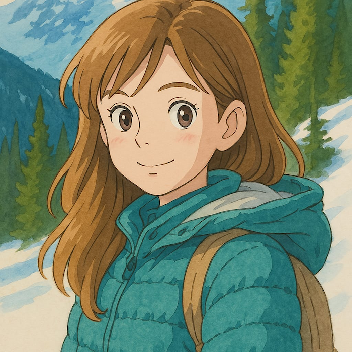

Фритрек и нулевой спринт: Подготовка к работе
<adventure>

Это было самое начало пути. На этом этапе важно было проникнуться основами и настроиться на учёбу. И, возможно, подумать, как новые знания могут повлиять на ваше будущее.
Старт обучения - как новое путешествие. Ты строишь планы и очень его ждешь. Преисполнен любопытства и желания свернуть горы.